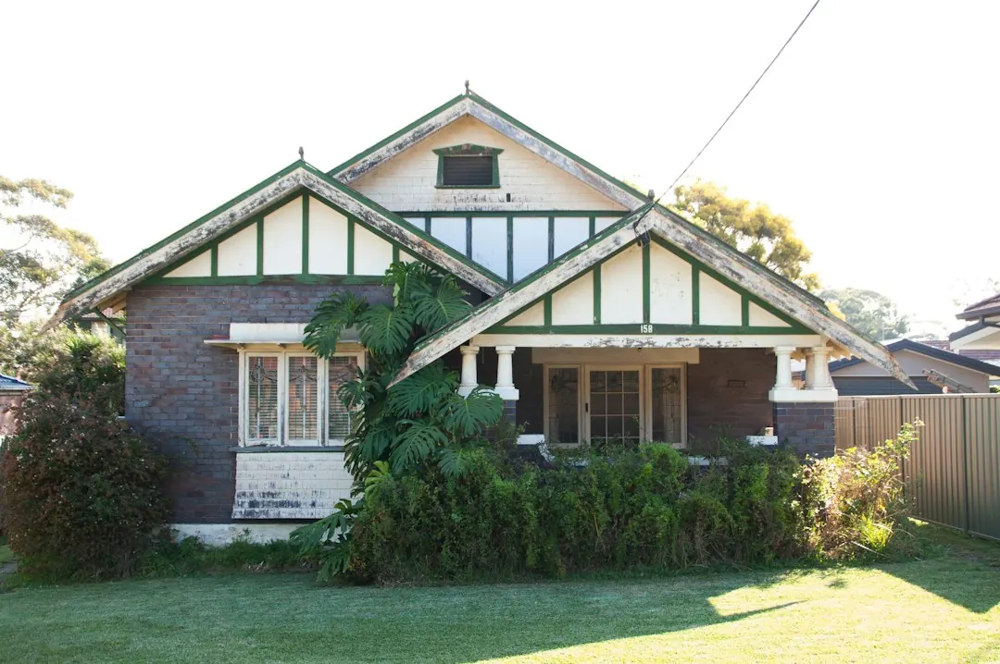

For homeowners comparing garage door repairs brisbane options, the practical decision is whether the fault belongs to the opener, spring system, door hardware, access controls or the door itself.
Garage Door Repairs Brisbane Explained
Brisbane Garage Door Repairs presents the first decision as diagnosis. A door that will not close may have an opener problem, a limit-switch or safety-beam issue, a spring fault, a cable problem, a track fault or a remote-control issue. Describing the symptom accurately gives the technician more useful information than simply asking for a new door.
Record what the door is doing, whether it is stuck open or jammed shut, whether the motor runs, and whether the problem appeared after an impact or gradually. Include the door style, suburb and access urgency in the enquiry. The published process then moves from fault description to a technician suited to the door type, followed by a service, repair, parts replacement or installation decision.
- Opener faults can involve the motor, wiring boundary, limit switches, safety beams or remotes.
- Door movement faults can involve springs, cables, rollers, drums, guides or tracks.
- Access-control faults may involve remotes, in-car buttons, keypads or rolling-code synchronisation.
When repair is the more useful first quote
A repair-first assessment is most useful when the door, motor or hardware may still be serviceable. The listed work includes replacing broken torsion or extension springs, rebalancing uneven doors, repairing jamming or noisy roller doors, re-railing derailed sectional and tilt doors, and replacing frayed lifting cables or worn rollers.
Ask the technician to identify the failed component and explain what remains serviceable. For a roller door, that may mean checking the curtain, barrel, guides and spring tension. For an opener, it may mean separating a motor fault from a limit-switch, safety-beam, remote or hardwired electrical issue. If powered opener work crosses into hardwired wiring, the published service states that a licensed Queensland electrician handles that part where required.
Repair is not automatically the lowest-cost choice. A written quote should make clear whether the proposed work is a service, a component replacement, a larger repair or a complete installation, and whether the door will need further work after the immediate fault is addressed.
Repair or replacement: compare the decision
The choice depends on the failed part, the condition of the door and whether the existing setup can be returned to reliable operation. Brisbane Garage Door Repairs lists new sectional, roller and tilt door installation with opener options, measured and quoted before work starts.
Use the comparison below as a question framework rather than a promise about the result.
Local details that change the job
Brisbane homes do not all present the same access or installation conditions. The published location material distinguishes older post-war homes, timber Queenslanders, brick family homes, townhouse infill, split-level properties, apartment basements, steep driveways, larger blocks and automated double garages. Those details can affect access to the door, the space around tracks and the practical way a technician inspects the fault.
Examples include older inner-north homes in Stafford, timber and 1970s brick housing around Mitchelton, hilly streets in Ashgrove, split-level homes and apartment basements in Indooroopilly, and steep-driveway properties in The Gap. Bayside locations are also described in terms of salt exposure and differing garage setups. These are reasons to state the suburb and property context in the first enquiry, not merely to identify a service area.
For another independent local reference, see the Brisbane garage door repair guide.
Prepare a quote request that can be acted on
A useful enquiry gives the technician enough context to decide what should happen next. The published form asks for a name, phone, email, suburb or postcode and a description of the garage-door fault. Add the details that distinguish one repair path from another.
- Door style: sectional, roller or tilt.
- Symptom: noisy, bowed, sticking, off-track, fast-dropping, jammed or unable to close.
- Powered equipment: whether the opener motor runs and whether remotes, keypads or in-car buttons respond.
- Visible hardware issue: broken spring, frayed cable, worn roller, bent track or impact damage.
- Access need: whether the door is stuck open, jammed shut or left unusable after a failure.
Before approving work, ask what component failed, whether the quote covers parts and labour, whether the proposed repair is expected to restore normal operation, and what replacement option would be considered if the existing door or motor is too far gone.
- Describe the symptom. State what the door is doing, including whether it is noisy, stuck, off-track, uneven or unable to close.
- Add the property context. Provide the suburb, door style, access conditions and whether the garage is attached, split-level, basement or otherwise difficult to reach.
- Separate the systems. Say whether the issue appears to involve the opener, spring, cable, roller, track, remote, keypad or the door itself.
- Request the repair path. Ask whether the recommendation is a service, component repair, replacement or new installation, and request the written quote before work starts.
| Option | Usually consider it when | Questions to ask |
|---|---|---|
| Repair or parts replacement | A specific spring, cable, roller, track, opener component or access control appears to be the fault | Which part failed, what else was checked, and what work is included? |
| New door or opener installation | The door, motor or hardware is too far gone for a practical repair | Which door type and opener options suit the opening, and what was measured before quoting? |
This guide covers fault identification, repair-versus-replacement questions, Brisbane property context and the information needed for a garage-door quote.